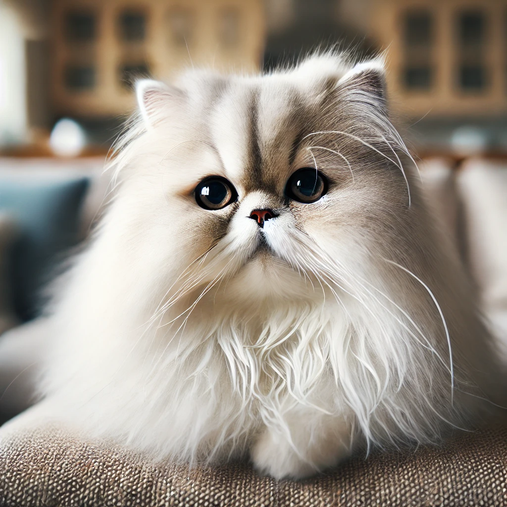
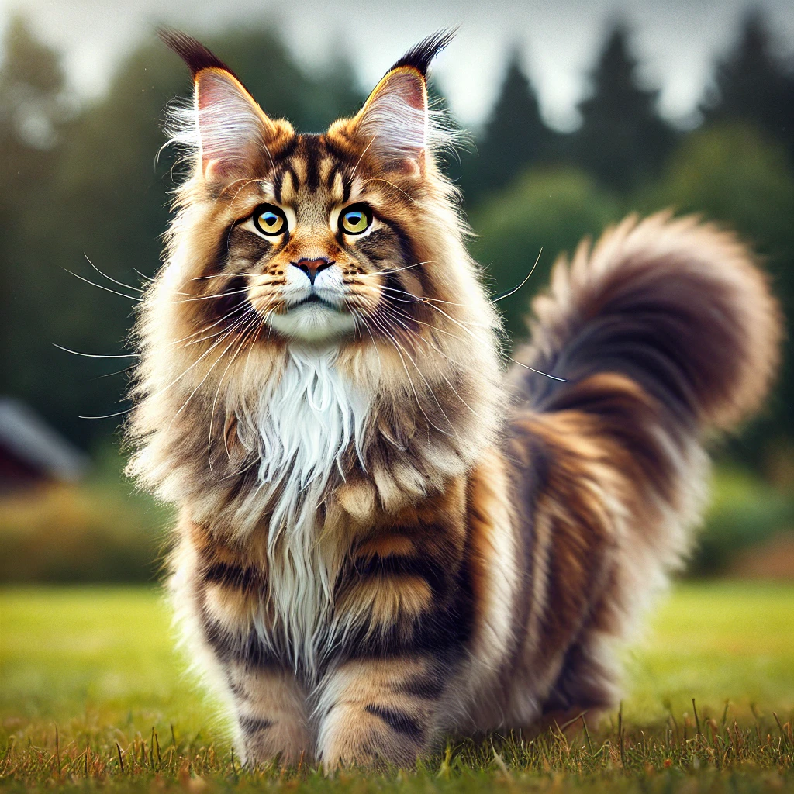
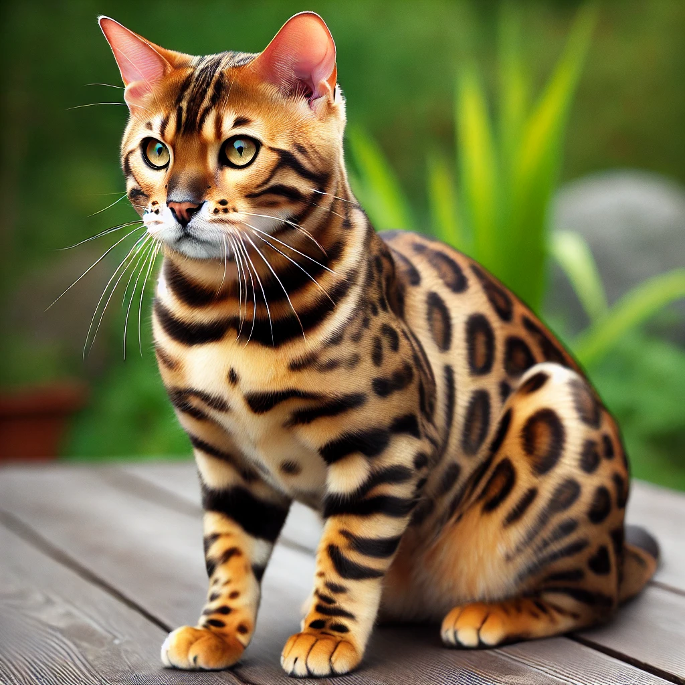
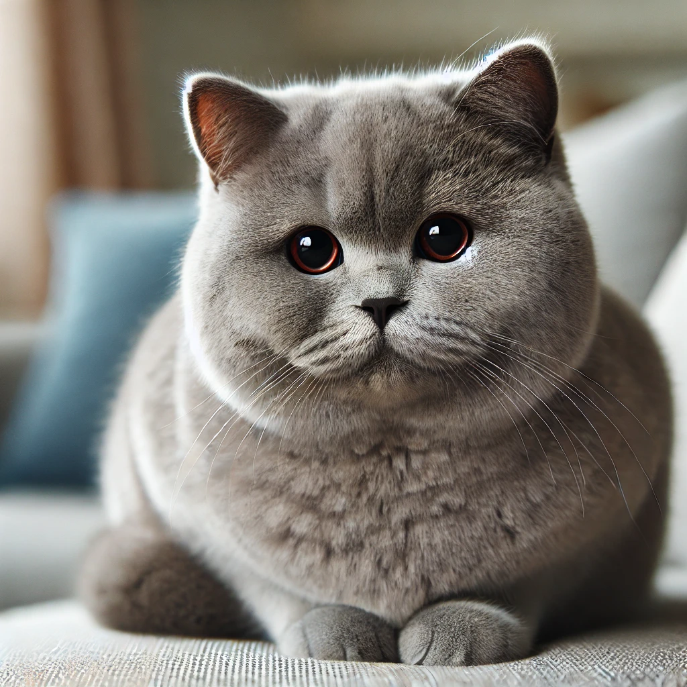
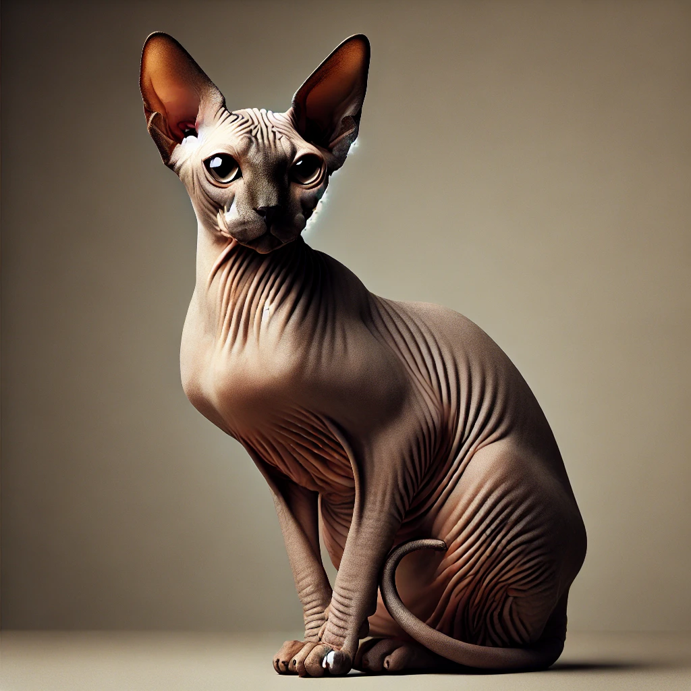

Kucing rumahan atau nama lain ilmiahnya Felis catus adalah hewan mamalia karnivora kecil yang telah menjadi sahabat manusia selama ribuan tahun. Mereka dikenal karena sifatnya yang anggun, lincah, dan mandiri. Secara fisik, kucing memiliki tubuh yang fleksibel dengan cakarnya yang tajam, telinga yang peka terhadap suara, serta penglihatan yang tajam, terutama pada malam hari. Kucing merupakan hewan yang cerdas dan memiliki insting berburu yang kuat, meskipun telah dijinakkan. Selain sebagai hewan peliharaan, mereka juga dikenal efektif dalam mengendalikan populasi hama seperti tikus. Secara sosial, kucing memiliki karakter yang bervariasi, mulai dari yang sangat ramah hingga lebih tertutup atau soliter. Interaksi mereka dengan manusia sering kali dipengaruhi oleh lingkungan serta pengalaman masa kecilnya. Kucing dikenal sebagai hewan yang bersih, sering menjilat tubuhnya untuk menjaga kebersihan dan kesehatannya. Selain itu, kucing juga memiliki berbagai cara berkomunikasi, seperti melalui suara (dengkur, meong), gerakan tubuh, hingga ekspresi wajah, yang semuanya digunakan untuk berinteraksi dengan manusia dan sesama kucing
Kucing Persia adalah salah satu ras kucing yang paling dikenal dan dicintai di dunia karena bulunya yang panjang, halus, serta wajahnya yang datar dan lucu. Kucing ini memiliki penampilan yang sangat elegan, dengan tubuh yang besar, kaki pendek, serta ekor yang lebat. Wajahnya yang khas dan ekspresi manis membuatnya sering dianggap sebagai kucing yang anggun dan tenang. Ras ini dikenal memiliki sifat yang lembut, penyayang, dan cenderung kalem, sehingga mereka sangat cocok menjadi hewan peliharaan di lingkungan yang tenang. Namun, kucing Persia membutuhkan perawatan rutin untuk menjaga bulunya tetap sehat dan bebas dari kusut.Selain perawatan bulu, kucing Persia juga memerlukan perhatian khusus terkait kesehatan, terutama pada masalah pernapasan karena bentuk hidung mereka yang pesek. Mereka juga cenderung rentan terhadap penyakit mata dan gigi. Meski begitu, kucing Persia adalah hewan yang sangat setia dan menikmati waktu bersama pemiliknya. Mereka tidak terlalu aktif atau suka melompat-lompat, sehingga lebih suka berada di dalam rumah, duduk manis di tempat yang nyaman. Dengan sikap yang tenang dan kebutuhan perhatian ekstra, kucing Persia sangat cocok bagi pemilik yang siap untuk berkomitmen pada perawatan intensif dan rutin.
Kucing Maine Coon adalah salah satu ras kucing domestik terbesar dan paling populer di dunia.Ras ini terkenal karena bulunya yang tebal dan panjang, telinga besar dengan ujung berbulu, serta ekor yang panjang dan lebat. Kucing Maine Coon memiliki tubuh yang besar dan berotot, memberikan kesan kuat dan gagah. Kepribadian mereka sangat ramah, penyayang, dan sosial, menjadikannya teman yang baik bagi keluarga. Mereka juga dikenal mudah beradaptasi dengan lingkungan dan cenderung aktif serta suka bermain, namun tetap memiliki sifat santai yang membuat mereka cocok untuk tinggal di dalam rumah.Kucing Maine Coon memiliki sejarah yang cukup panjang, di mana asal-usulnya seringkali dikaitkan dengan daerah New England, Amerika Serikat. Ras ini konon berkembang dari kucing yang dibawa oleh para pelaut atau imigran Eropa pada abad ke-19. Karena kemampuan mereka berburu tikus yang hebat, Maine Coon awalnya digunakan untuk menjaga kapal dan lumbung dari hama. Selain itu, bulunya yang tebal dan tahan terhadap cuaca dingin juga membantu kucing ini bertahan di iklim yang keras. Hari ini, Maine Coon dianggap sebagai salah satu kucing paling cerdas dan penuh kasih sayang yang membuatnya sangat disukai oleh banyak pecinta kucing.
 Kucing Bengal adalah ras kucing yang unik karena memiliki pola bulu eksotis yang menyerupai kucing liar, seperti macan tutul. Bulu mereka berkilau dengan pola roset atau bintik-bintik besar berwarna hitam atau coklat di atas dasar warna emas atau oranye. Penampilan liar ini adalah hasil dari persilangan antara kucing domestik dan kucing leopard Asia pada tahun 1960-an, yang bertujuan menghasilkan kucing yang tampak seperti kucing liar tetapi memiliki sifat jinak dan ramah. Meski terlihat garang, kucing Bengal dikenal sebagai kucing yang sangat aktif, cerdas, dan penuh energi, mereka suka bermain dan menjelajahi lingkungan sekitarnya. Selain penampilannya yang memikat, kucing Bengal juga memiliki kepribadian yang penuh rasa ingin tahu. Mereka sangat energik dan sering memerlukan stimulasi mental dan fisik yang cukup agar tetap bahagia. Mereka dikenal sebagai kucing yang suka bermain air dan sering menunjukkan kecerdasan yang luar biasa dalam berinteraksi dengan mainan atau bahkan memecahkan masalah sederhana. Kucing Bengal cocok untuk keluarga yang aktif dan siap memberikan banyak perhatian, karena mereka membutuhkan banyak interaksi serta stimulasi agar tetap puas dan sehat.
 Kucing British Shorthair dikenal dengan tubuhnya yang kuat dan bulat, wajah lebar, serta bulu yang sangat tebal. Kucing ini umumnya memiliki warna bulu abu-abu kebiruan, meskipun bisa datang dalam berbagai warna dan pola. Salah satu ciri khas kucing ini adalah matanya yang besar dan bulat, sering kali berwarna oranye atau tembaga. Sifatnya yang tenang, ramah, dan tidak terlalu aktif membuatnya menjadi hewan peliharaan ideal untuk rumah dengan suasana santai. Meski cenderung lebih pendiam dibanding beberapa ras lain, British Shorthair dikenal setia dan penyayang terhadap pemiliknya. Selain penampilan fisik yang menggemaskan, British Shorthair juga dikenal sebagai kucing yang relatif mudah dirawat. Bulunya yang tebal memang memerlukan penyisiran secara rutin, terutama saat pergantian musim, tetapi sifat mereka yang tidak terlalu menuntut membuatnya cocok untuk pemilik yang mencari kucing dengan perawatan sederhana. Mereka juga terkenal dengan daya tahan tubuh yang baik, meskipun tetap harus menjaga pola makan agar terhindar dari obesitas, mengingat kecenderungan mereka untuk memiliki gaya hidup yang lebih santai.
 Kucing Sphynx terkenal dengan penampilannya yang unik, tanpa bulu dan kulit yang berkerut. Ras kucing ini sebenarnya tidak sepenuhnya bebas bulu, melainkan memiliki lapisan tipis seperti suede yang terasa halus saat disentuh. Ketiadaan bulu membuat Sphynx lebih rentan terhadap suhu ekstrem, sehingga mereka lebih suka berada di lingkungan yang hangat. Selain penampilannya yang eksotis, kucing ini juga memiliki kepribadian yang penuh kasih sayang dan sangat suka berinteraksi dengan manusia. Mereka terkenal sangat sosial dan selalu mencari perhatian, sering kali mengikuti pemiliknya di sekitar rumah. Meski tidak memiliki bulu tebal, Sphynx memerlukan perawatan yang cukup unik. Kulitnya rentan berminyak, sehingga perlu dimandikan secara rutin untuk menjaga kebersihannya. Selain itu, mereka perlu dilindungi dari sinar matahari langsung karena kulitnya yang sensitif. Kucing Sphynx juga memiliki metabolisme yang lebih cepat dibanding ras lainnya, sehingga mereka cenderung makan lebih banyak. Namun, meski perawatannya agak berbeda, sifat Sphynx yang ceria dan penuh kasih membuat mereka menjadi hewan peliharaan yang sangat menyenangkan dan penuh kepribadian.
| No. | Jenis Kucing | Harga | Link |
| 1. | Kucing Persia | Rp1.000.000 | link |
| 2. | Kucing Maine Coon | Rp2.500.000 | link |
| 3. | Kucing Bengal | Rp3.000.000 | link |
| 4. | Kucing British Shorthair | Rp15.000.000 | link |
| 5. | Kucing Sphinx | Rp10.000.000 | link |
| written by: |
| Nama Lengkap | Adam Arya Febriansyah |
| NIM | 11220251000052 |
| Kelas | 5A |
| IG | @adam_arya.f |
Tinggalkan Komentar Anda